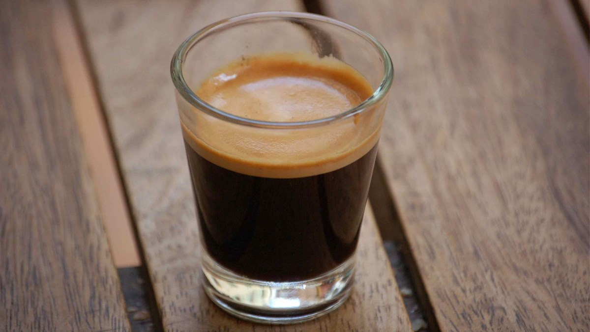
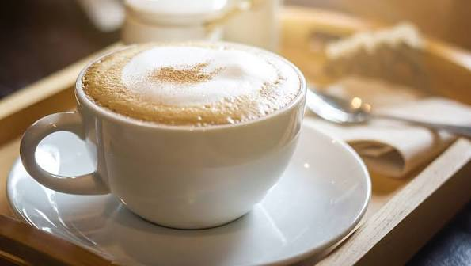
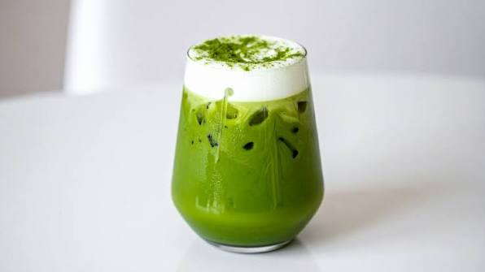
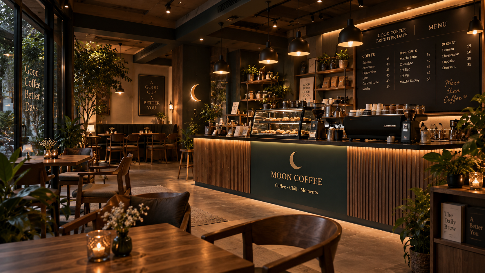
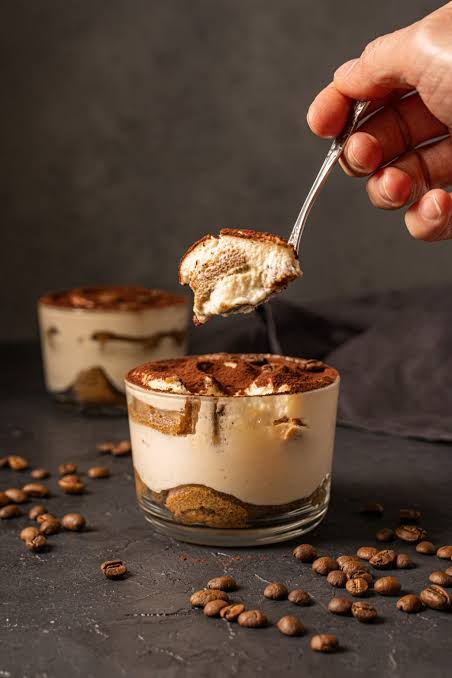

COFFEE 101
Espresso là gì?
Espresso là nền tảng của nhiều thức uống cà phê phổ biến. Một shot nhỏ nhưng có hương vị đậm và lớp crema đặc trưng.
Đọc bài viết →
COFFEE 101
Espresso là nền tảng của nhiều thức uống cà phê phổ biến. Một shot nhỏ nhưng có hương vị đậm và lớp crema đặc trưng.
Đọc bài viết →
COFFEE GUIDE
Cả hai đều kết hợp espresso và sữa, nhưng tỷ lệ sữa nóng và bọt sữa tạo nên trải nghiệm rất khác nhau.
Đọc bài viết →
TEA & MATCHA
Matcha có hương thơm thanh nhẹ và khi kết hợp cùng sữa tạo cảm giác mềm mại, phù hợp cho một buổi chiều thư giãn.
Đọc bài viết →
MOON STORIES
Không gian và thói quen có thể ảnh hưởng đến khả năng tập trung. Một góc đủ sáng và yên tĩnh thường giúp công việc dễ chịu hơn.
Đọc bài viết →
TEA
Vị trà nhẹ kết hợp hương đào là lựa chọn dễ uống khi bạn muốn một thức uống không quá béo.
Đọc bài viết →
DESSERT
Hương cà phê trong Tiramisu giúp món bánh có chiều sâu, đồng thời vị kem mềm tạo sự cân bằng khi thưởng thức.
Đọc bài viết →